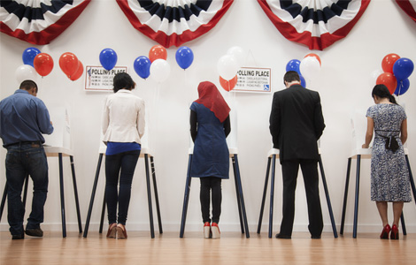
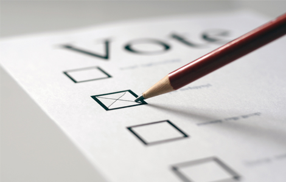

1. Elections have consequences.
You have the power to decide on the quality of life you want for yourself and future generations. Voting is your chance to stand up for the issues you care about like public transportation, raising minimum wage, or funding local schools. This is your life: take the time to help decide what’s best.
2. Not voting is giving up your voice.
Elections are decided by the people who go out and vote. Take some time and learn about the measures and the candidates. If you don’t vote, someone else will make the decision for you. Your power is in your vote.
3. It's your money.
You pay taxes, but do you know how that money is being used? Most people don’t. Voting is your chance to choose how your tax dollars are spent – such as funding for health care and social services.
4. Voting is an opportunity for change.
Do you want to make a positive impact? Voting gives you that chance! Support the candidates and ballot measures that can help your community, state, and even the nation for the greater good. Make your voice heard in these elections.
5. The community depends on you!
Our communities are made up of friends, loved ones, neighbors, and children. Some may not know how important voting is, while others don’t have the privilege. Make the decision to vote for yourself and those around you.